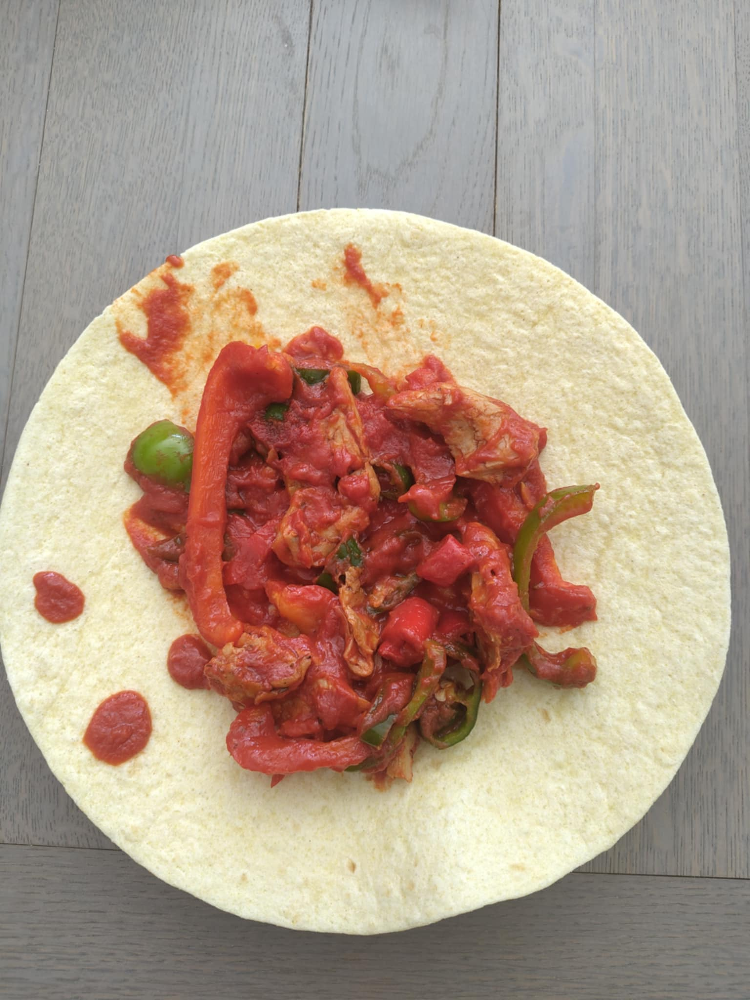

Fajitas 🌶️
Fajitas ! Énorme réussite sur la sauce, et l’émincé de la marque "Heura" est une tuerie.
Ingrédients : coulis de tomate, concentré de tomate, maïzena (pour épaissir), sucre (pour l’addiction), poivrons, émincé Heura, piments vert et rouge.
Bon, par contre, 2 piments verts + 2 piments rouges, c’est clairement trop 🌶️🌶️🌶️...